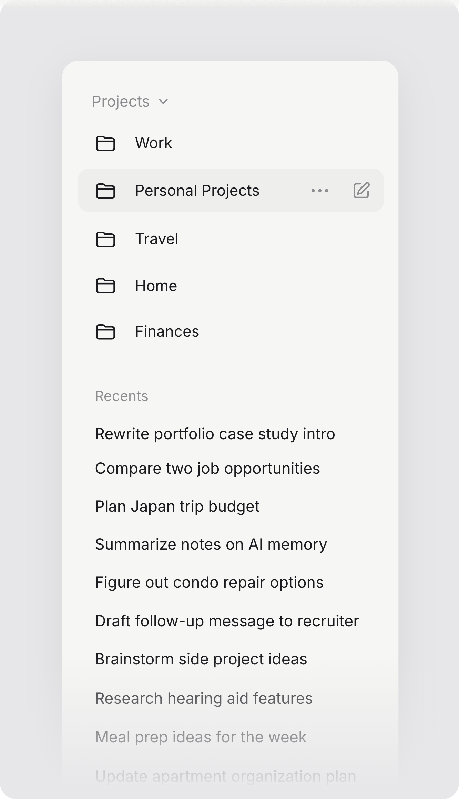
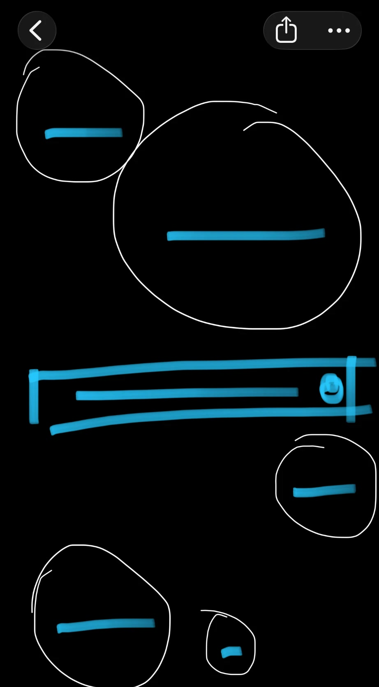
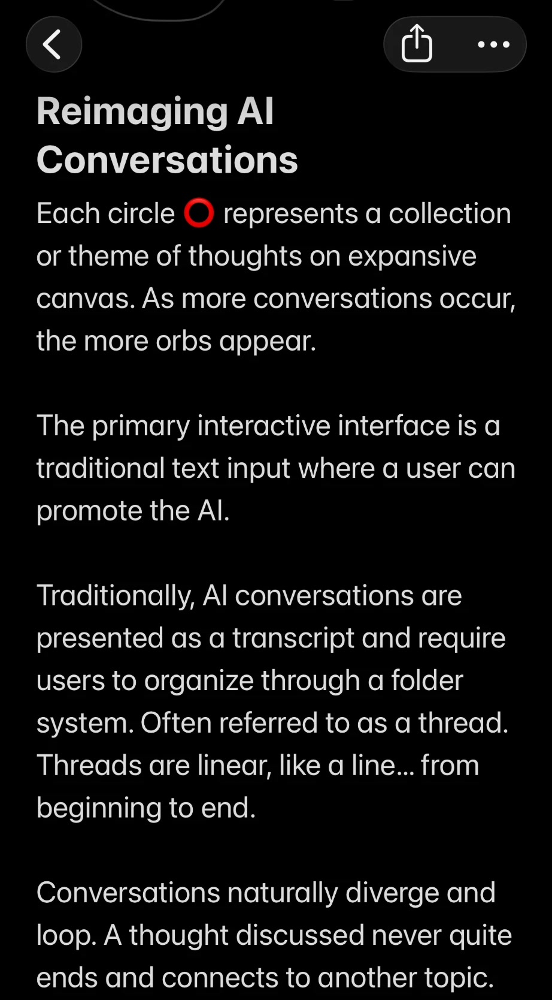
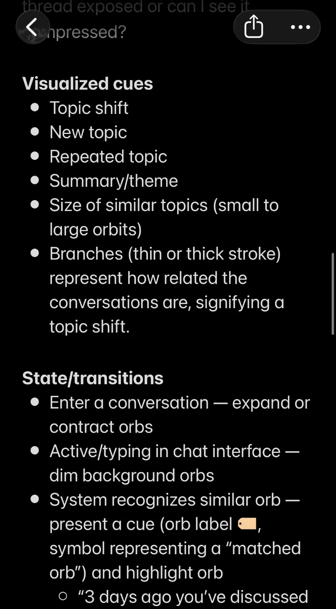
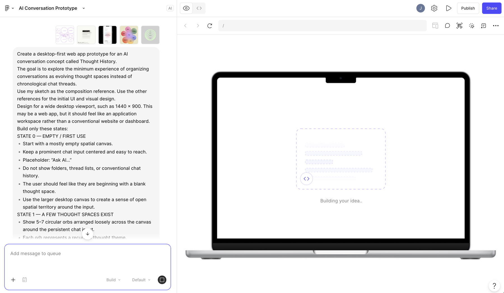
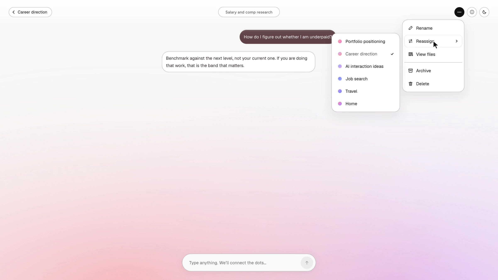
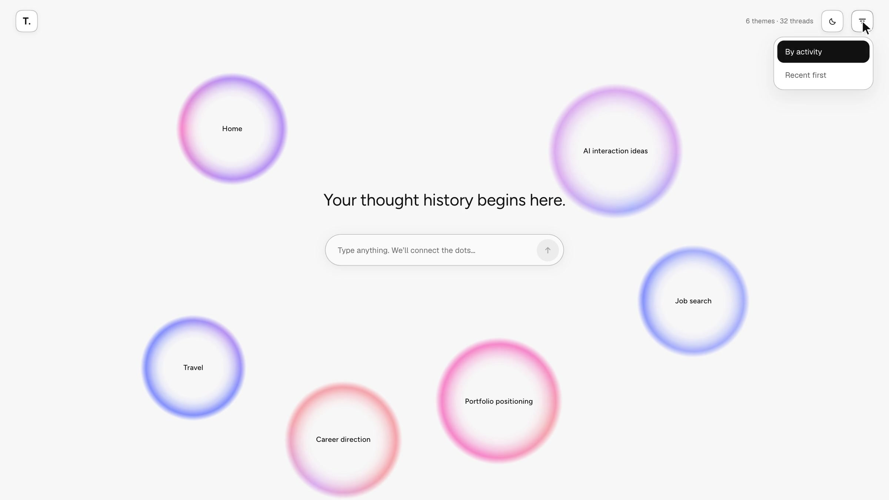

Spatial History for Conversational AI
I designed and built Threadscape, a functional prototype that reimagines linear AI chat history as a spatial canvas of connected themes. Powered by Gemma 4 (opens in new tab), it explores how people can connect related conversations, trace how their thinking evolves, and return to ideas without starting from scratch.
I designed a flexible information architecture that organizes conversations by theme, reveals relationships between ideas, and supports continuity as thoughts evolve over time.
- Timeline
- 5 weeks · 2026
- Role
- Product Designer
- Project
- Independent exploration
- Built With
- Claude Code
- React
- TypeScript
- Gemma 4
- Skills
- Interaction
- Systems
- AI Prototyping
Problem

AI chat history makes it difficult to reconnect ideas across conversations. As I used AI to explore design concepts, research, and personal interests, I found myself creating new threads for related ideas and struggling to remember where earlier thinking lived.
What if AI chat history organized itself around ideas, not threads?
A study of 345 people found that frequent filers weren’t better at finding information again, while automatic grouping helped. (Whittaker et al., 2011)
Process



01 — Starting with a sketch and notes
I started in my Notes app with orbs as themes on an open canvas and one text input. My notes already described dimming the other orbs while typing and highlighting a matched one.

02 — A lo-fi prototype in Figma Make
I turned the brief into a first prototype in Figma Make, with my sketch as the composition reference. It proved the cue: type, see a matching theme, choose Continue or Start fresh. It also showed what it couldn’t do: it had no motion, and every layer replaced the canvas.
03 — Building in Claude Code, with a lab
I rebuilt it in code with Claude Code. Before locking anything in, I asked for a lab: a state bar and sliders to test motion and visuals by feel. It also let Claude drive the same states while we debugged.
04 — Hooking up the LLM
The demo runs Gemma 4 on Cloudflare’s servers, behind a small program that holds the rules and limits each visitor to 10 exchanges. The cap first lived in the browser tab, where a reload cleared it, so I moved it to the server.
I designed a canvas where each idea is its own space, and a new thought finds its way back to the right one.


Designing for trust and learning what to validate.
-
Keeping context trustworthy
I introduced guardrails to prevent invented context, preserve conversation history, and let people start fresh.
-
Testing the interaction model
Next, I’d test whether people revisit ideas across conversations and whether theme matching helps them reconnect.
ammerallj@gmail.com
Want the full story, including everything I changed my mind about along the way? Let’s chat. Or try the prototype (opens in new tab).